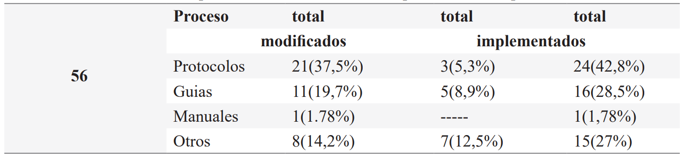
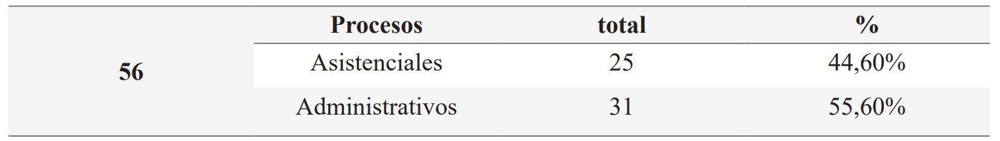
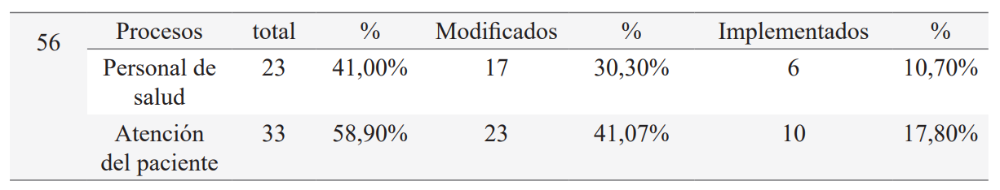

ISSN-PRINT 1794-9831 / E-ISSN 2322-7028
Vol. 19 Nº 3 / sep - dic, 2022 / Cúcuta, Colombia.
ISSN-PRINT 1794-9831 / E-ISSN 2322-7028
Vol. 19 Nº 3 / sep - dic, 2022 / Cúcuta, Colombia.
Resumen
Objetivo: Identificar los procesos institucionales implementados y/o modificados para la atención de pacientes sospechosos o diagnosticados con COVID-19 en una institución de salud de Cundinamarca. Materiales y métodos: Se realizó un estudio trasversal descriptivo. La recolección de datos se efectuó a través del método de revisión de registros de los procesos institucionales de una institución de segundo nivel de complejidad, desde marzo del 2020 hasta diciembre del 2021. A continuación, la información se sistematizó en una matriz de Excel previo diseño, validación y aplicación. Resultados: Se precisa que como dato principal la institución cuenta con 80 procesos establecidos de los cuales 41 fueron modificados, lo que corresponde al 51.25%; 24 no sufrieron ninguna modificación por la pandemia lo que equivale al 30%; también se implementaron15 procesos nuevos que corresponden a un 18.75%. Conclusiones: Se pudo determinar que las principales modificaciones se observaron en la presencia de un mayor número de procesos modificados, puesto que ante la necesidad inmediata se requirió dar respuesta a la contingencia mediante la adaptación de lineamientos ya estandarizados anteriormente, lo que permitió agilizar la respuesta ante el suceso. Además, se evidenció un impacto significativo en la atención ambulatoria debido a la demanda del servicio, así como en los procesos dirigidos directamente a la atención del paciente. Se observó que el impacto del COVID-19 transformó significativamente los procesos implementados por las entidades sanitarias, lo que las llevó a realizar cambios en las acciones ejecutadas por el personal de la salud; de ahí, que este suceso permitió examinar las problemáticas importantes que se habían invisibilizado.
Palabras Claves: COVID-19; Procesos; Salud; Impacto; Prevención; Gestión de los servicios de salud.
Abstract
Objective: Identify the implemented and/or modified institutional processes for the attention of suspected or diagnosed COVID-19 patients in a health institution of Cundinamarca. Materials and methods: A cross-sectional descriptive study was carried-out. The recollection of data was made through a review method of records of the institutional processes from an institution of second level of complexity, from March of 2020 to December of 2021. Next, the information was systematized in an Excel matrix that was previously designed, validated and applied. Results: It must be noted that as the main information, the institution has 80 established processes of which 41 were modified, corresponding to 51,25%; 24 did not have any modifications due to the pandemic, which is equivalent to 30%; also implementing 15 new processes that correspond to 18,75%. Conclusions: It was possible to determine that the main modifications were observed in the presence of a greater number of modified processes, since there was an immediate need that required to respond to the eventuality through the adaptation of previously standardized guidelines, which allowed to speed up the response to the event. Also, a significant impact was evidenced in ambulatory care due to the demand for the service, as well as in processes that were directly aimed at patient care. It was observed that the impact of COVID-19 significantly transformed the processes implemented by health entities, which led to make changes in the actions taken by the healthcare personnel; from there, this event allowed to examine important issues that had been made invisible.
KeyWords: COVID-19; Processes; Health; Impact; Prevention; Health services management.
Resumo
Objetivo: Identificar os processos institucionais implementados e/ou modificados para o atendimento de pacientes suspeitos ou diagnosticados com a COVID-19 em uma instituição de saúde em Cundinamarca. Materiais e métodos: Foi realizado um estudo transversal descritivo. A coleta de dados foi realizada por meio do método de revisão dos registros dos processos institucionais de uma instituição de segundo nível de março de 2020 a dezembro de 2021. As informações foram então sistematizadas em Excel após validação e aplicação. Resultados: a instituição possui 80 processos estabelecidos dos quais 41 foram modificados, o que corresponde a 51,25%; 24 (30%) não sofreram nenhuma modificação devido à pandemia; 15 (18,75%) novos processos também foram implementados. Conclusões: Foi possível determinar que houve maior número de processos modificados, uma vez que foi necessária a resposta à contingencia por meio da adaptação de diretrizes já padronizadas anteriormente, o que permitiu acelerar a resposta ao evento. Além disso, foi evidenciado um impacto significativo no atendimento ambulatorial devido à demanda pelo serviço, bem como em processos voltados diretamente ao atendimento ao paciente. Observou-se que o impacto da COVID-19 transformou significativamente os processos implementados pelas entidades de saúde, o que os levou a fazer mudanças nas ações realizadas pelos profissionais de saúde; portanto, este evento tornou possível examinar os problemas importantes que tinham se tornado invisíveis.
Palavras-chave: COVID-19; Processos; Saúde; Impacto; Prevenção; Administração de serviços de saúde.
Autor de correspondencia*
1* Estudiante de
pregrado del programa de enfermería de la Universidad
de Ciencias Aplicadas y Ambientales
U.D.CA. Bogotá, Colombia.
daniortiz@udca.edu.co,
Estudiante de
pregrado del programa de enfermería de la Universidad
de Ciencias Aplicadas y Ambientales
U.D.CA. Bogotá, Colombia.
daniortiz@udca.edu.co,  0000-0001-7492-2997
0000-0001-7492-2997
2* Estudiante de
pregrado del programa de enfermería de la Universidad
de Ciencias Aplicadas y Ambientales
U.D.CA. Bogotá, Colombia.
yulrincon@udca.edu.co, 0000-0002-3350-6644
3* Magister en
Educación. Profesora de
la Universidad de Ciencias Aplicadas y
Ambientales U.D.C.A. Bogotá, Colombia.
nportela@udca.edu.co, 0000-0001-5177-3634
Recibido: 2 mayo 2022
Aprobado: 25 agosto 2022
Para citar este artículo / To reference this article / Para citar este artigo: Ortiz-Arias DA, Rincón-Peña YA, Portela-Escandón NY. Procesos institucionales para la atención del paciente sospechoso o diagnosticado con Covid-19.. 2022; 19(3):75-85. https://doi.org/10.22463/17949831.3375
© Universidad Francisco de Paula Santander.
Este es un artículo bajo la licencia CC-BY-NC-ND

Introducción
El origen del COVID-19 data de diciembre del año 2019 en Wuhan, China, en la provincia de Hubei, en donde se presenció un brote de casos de neumonía grave. Al iniciar los estudios epidemiológicos estos indicaban que la enfermedad se expandía rápidamente y se comportaba de forma agresiva, con una letalidad global del 2.3% (1). Este suceso generó un método de acción con poca reflexión y comprensión, impulsando acciones de respuesta inmediatas. Esto sería fundamental para el control de la enfermedad y el acceso a la salud, adoptando y acatando las medidas preventivas por parte de la población y las entidades prestadoras de salud (2). Así mismo, se agudizan los problemas en salud y su impacto en las instituciones hospitalarias, al aumentar la demanda en la prestación de servicios y un cambio notorio en la reducción de cobertura en diferentes servicios, lo que exigió una serie de modificaciones que permitieron un proceso adecuado y oportuno para la atención frente a la pandemia (3,4).
La importancia de revisar esta problemática radica en brindar aportes sobre los cambios que ha generado la pandemia en el sector salud, ante la emergencia sanitaria del COVID-19 y el desafió que tienen las instituciones de estar preparadas para futuras situaciones epidemiológicas.
Por lo anterior es necesario identificar los procesos institucionales implementados y/o modificados para la atención de pacientes sospechosos o diagnosticados con COVID-19 en una institución de salud de Cundinamarca. Desde esta perspectiva, se busca identificar los objetivos específicos, los cuales permitirán especificar los procesos institucionales implementados durante la pandemia del COVID-19 por la institución prestadora de salud y, al mismo tiempo describir las variables específicas que permiten identificar la infraestructura, que hace referencia a las instalaciones de la institución de salud, incluyendo equipamiento, insumos y los distintos factores que posibilitan la atención a los usuarios (5).
Por otra parte, la variable general engloba aspectos comunes pertenecientes a un conjunto de individuos que forman parte de un contexto, catalogándolos en función de sus características o atributos específicos (6). Por último, se describen los servicios, los cuales se definen como aquellos que brindan asistencia sanitaria, cuya articulación constituye un sistema de atención orientado al mantenimiento, la restauración y la promoción de la salud de las personas (7). Por tanto, es importante analizar estas variables puesto que permiten efectuar una clasificación y organización de la información recolectada con respecto al impacto de la emergencia sanitaria, como la atención centrada en la respuesta para reportar, contener y manejar el impacto de la pandemia (8).
Objetivos
Objetivo General
Identificar los procesos institucionales implementados y/o modificados para la atención de pacientes sospechosos o diagnosticados con COVID-19 en una institución de salud de Cundinamarca.
Objetivos Específicos
Materiales y Métodos
El tipo de estudio aplicado en la institución prestadora de servicios de salud de Cundinamarca, con un segundo nivel de complejidad, es transversal descriptivo, lo cual permite analizar datos de variables recopiladas en un momento específico y en un tiempo determinado (9,10). En este caso el tiempo es el que transcurre desde el inicio de la pandemia hasta la fecha de aplicación del estudio que incluye los cambios generados en los procesos institucionales a consecuencia de la pandemia COVID-19, posibilitando inferir conclusiones sobre los cambios inminentes en este corte de tiempo.
La técnica implementada fue la revisión de documentos, esta permitió reunir y medir información de diversas fuentes con el fin de obtener un panorama completo y específico de una zona de interés (11,15).
Finalmente, se realizó una matriz de recolección de información, la cual se dividió en tres fases:
1. Fase: Matriz con información recolectada a partir de las 3 variables de donde se extrajeron los datos para el análisis (Servicios, Infraestructura y generales). Además se realizó la validez del constructo.
2. Fase: Prueba piloto de la matriz en una institución, para probar en menor escala aspectos logísticos de la ejecución del estudio, de esta manera se evitará cometer errores y así verificar aspectos fundamentales en la utilización y planeación de los estudios posteriores (12). La validez de este constructo tiene como objeto verificar que la investigación obtenga una calidad óptima para que brinde evidencias válidas y confiables (13).
3. Fase: Extracción de los datos, en donde se realizó un análisis comparativo de las características de las variables que se establecieron en cada uno de los procesos institucionales. Se clasifican dependiendo si son procesos nuevos implementados y/o modificados, o si son protocolos, guías y manuales. De igual forma, se clasificaron teniendo en cuenta si estaban dirigidos al personal sanitario o si se aplican al usuario durante su estancia en la institución, o si hacen parte de un proceso asistencial o administrativo. Igualmente, se incluyó una caracterización global a lo que se ha denominado procesos generales: a) atención ambulatoria, referida a: medios diagnósticos, rehabilitación, y consulta externa; b) atención continua que incluye hospitalización y urgencias; y, c) las unidades cerradas que agrupan cuidado intensivo, salas de parto y salas de cirugía.
Figura 1. Orden del análisis de la información
Fuente: Elaboración propia de los autores.
Conviene aclarar que esta investigación cumplió con los principios éticos.
Este proyecto fue aprobado por el Comité de Ética y de Investigaciones, de la Universidad de Ciencias Aplicadas y Ambientales U.D.C.A (Bogotá Colombia). La participación de la institución fue previo consentimiento informado. Se consideraron los principios éticos de investigación según la resolución número 8430 de 1993 (octubre 4) por la cual se establecen las normas científicas, técnicas y administrativas para la investigación en salud de Colombia (14).
Resultados
Al realizar el análisis respectivo de la información hallada en términos cuantitativos, se precisa que como dato principal la institución cuenta con 80 procesos establecidos de los cuales 41 fueron modificados, lo que corresponde al 51.25 %; 24 no sufrieron ninguna modificación por la pandemia, lo que equivale al 30% y hay 15 procesos nuevos implementados, correspondientes a un 18.75%.
Teniendo en cuenta, lo anterior se evidenció el impacto que generó la pandemia del covid-19 en el sector salud, lo cual requirió de acciones inmediatas para la atención de la población.
Del mismo modo, se realizó la verificación de los 56 procesos, encontrándose que 41 corresponden al 73.21 % los cuales sufrieron alguna modificación y 15 equivalentes a un 26.78 % son nuevos y fueron implementados por la actual pandemia.
Así mismo, los documentos se clasificaron en: protocolos, guías, manuales y otros; además, se pudo determinar que eran procesos nuevos implementados y modificados.
Tabla 1. Procesos nuevos implementados o modificados dependiendo del tipo de documento
Fuente: Elaboración propia de los autores.
Por lo tanto, es correcto inferir que los procesos, que se tenían dentro de la institución presentaron en mayor relevancia en cuanto a modificaciones, en comparación con los procesos los cuales requirieron una nueva implementación por la pandemia del COVID-19.
Otra manera de clasificar la información fue por medio de los procesos asistenciales y los administrativos, el resultado que el análisis arrojó se muestra en la tabla 2.
Tabla 2. Procesos asistenciales o administrativos
Fuente: Elaboración propia de los autores
De acuerdo a este análisis se evidencia que la mayoría de cambios se presentaron a nivel administrativo, debido a una mayor gestión de la financiación de recursos de acuerdo al tipo de servicio que se maneje; de manera análoga, es necesario garantizar la estandarización de los procesos institucionales, con el objeto de asegurar una atención en salud de calidad, tanto para el paciente receptor de la misma como para el profesional que imparte esta labor.
Igualmente, se incluye la clasificación que permite determinar qué procesos institucionales estaban dirigidos al personal de salud o específicamente a la atención del paciente con sospecha o diagnosticado con covid-19. Los resultados se pueden visualizar en la Tabla 3.
Tabla 3. Procesos del personal de la salud y la atención del paciente
Fuente: Elaboración propia de los autores.
Si se tiene en cuenta el análisis anterior se puede deducir que los procesos generales se realizaron para atender al paciente, observándose mayor relevancia en los modificados, debido a que las principales medidas preventivas se implementaron con el fin de evitar la trasmisión del virus entre el personal sanitario y el paciente.
Con el fin de agrupar la información se clasificó dependiendo del tipo de variable y el servicio que incluye. Al tener en cuenta los 56 procesos implementados y/o modificados se realiza la siguiente agrupación de la información.
De los 56 procesos institucionales implementados y/o modificados por la pandemia del COVID-19, se efectuó una división de 41 procesos modificados que corresponden al 73.21%, de los cuales el 53.65% hacen referencia a la variable general, el 26.82% a los servicios y el 19.51% a infraestructura. Del mismo modo, de los 41 procesos modificados en general, el 65.85% pertenece a la atención ambulatoria, 9.7 % a la atención constante y el 24.3% a las unidades cerradas.
Respecto a los datos descritos anteriormente se determinó un valor significativo en la variable de los procesos generales con un valor del 53.65% (22), debido a las modificaciones principales, las cuales se realizaron a nivel estándar para toda la población que forma parte de la institución, incluyendo al personal de salud como a los pacientes, puesto que se buscaba garantizar una mayor seguridad en la ejecución de los diferentes procedimientos de acuerdo con la normativa nacional vigente.
Por otro lado, analizando la clasificación por servicios se evidenció que las mayores modificaciones se ejecutaron en la variable de atención ambulatoria, debido a que en este servicio los procedimientos son masivos y la gente acude constantemente a los servicios de salud. Posteriormente, de los 15 que corresponden al 26.78% de los procesos nuevos implementados por la actual pandemia, se contemplan dentro de la variable generales el 80 % y por servicios el 20%. Asimismo, de los 26.78% procesos modificados en general, el 93.3% pertenecen a la atención ambulatoria y 6.66% a las unidades cerradas.
Teniendo en cuenta lo planteado anteriormente, se puede afirmar que de los procesos implementados, el impacto ha sido más significativo en la variable general, puesto que son procesos instaurados por obligatoriedad para el manejo y funcionamiento de las instituciones de salud. Respecto a los modificados se puede deducir que la alta demanda costo-efectiva y de pacientes fue la atención ambulatoria, puesto que tuvo una mayor fluctuación.
Discusión
El presente estudió mostró los procesos institucionales implementados y/o modificados para la atención de pacientes sospechosos o diagnosticados con COVID-19 en una institución de salud en Cundinamarca de segundo nivel de complejidad. Se verificaron 56 procesos institucionales de los cuales 41 fueron modificados y se implementaron 15 nuevos. De acuerdo con esta información se observó que los procesos modificados tuvieron un valor significativo a diferencia de los nuevos implementados, por esta razón fue necesario destinar recursos disponibles para mejorar la calidad de la atención y ampliar su cobertura, dando lugar a la implementación o ajuste de métodos eficientes que permitieran mejorar el cuidado otorgado por el personal de la salud (16), siendo una de las principales limitantes el que la institución no tenía especificados los recursos humanos y financieros que se utilizarían para la implementación de estos protocolos.
Es decir, que los procesos fueron adoptados y reformados debido a los cambios en la institución de salud. Teniendo en cuenta estos datos se precisó que la información consignada en los documentos de la entidad hospitalaria se vio modificada en su mayoría, para cumplir con los requisitos establecidos, lo que generó un método sin que hubiese reflexión y comprensión, impulsando acciones de respuesta inmediata (17). Por ejemplo, para llevar a cabo la demanda suscitada por la contingencia se tuvo que optar por medidas, que variaban de acuerdo con las necesidades del momento. Al implementar las diferentes acciones intrahospitalarias, los principales problemas se empezaron a identificar de acuerdo a: déficit del personal cualificado para responder a la pandemia, elementos de protección personal insuficientes, insumos escasos, problemas en las cadenas de producción y transporte de los mismos (18).
Posteriormente, se describen las variables de los procesos implementados y/o modificados en función de su organización y priorización en la institución de salud. Las reformas de los procesos institucionales han progresado en las últimas décadas y han servido para presentar escenarios eficaces de prevención y control de enfermedades infectocontagiosas, esto con la finalidad de seguir monitoreando el SARS-COV2, y controlar su velocidad de propagación en Colombia (19). Teniendo en cuenta esta información, se clasificaron los procesos institucionales incluyendo: protocolos, guías, manuales y otros, los cuales se dividieron en procesos de carácter asistencial o administrativo; a su vez se observaron si iban dirigidos a los pacientes o al personal asistencial y, por último, según los procesos si eran modificados y/o nuevos implementados por la institución.
Respecto al análisis de los datos presentados anteriormente y la priorización de los pacientes sospechosos o diagnosticados con COVID-19 se pudo observar que “La pandemia ha agudizado los problemas en salud y ha afectado a las instituciones hospitalarias, puesto que se ha evidenciado un aumento en la tasa de mortalidad de otras enfermedades, la prestación de servicios es deficiente, reducción de cobertura en vacunación y fragilidad en los sistemas de organización administrativa” (3). Estas deficiencias ocasionaron modificaciones en la planeación, dirección, organización y control en la entidad hospitalaria, sobretodo debido a la premura en cuanto al tiempo para la gestión y manejo de los recursos monetarios para el sostenimiento financiero de la institución, razón por la cual se deben realizar ajustes económicos que permitan distribuir insumos para la atención de otras afecciones, las cuales se agudizaron durante la pandemia por la desorganización que se presentó al momento del manejo de la contingencia (18).
Por otro lado, el COVID-19 dio origen a nuevos procesos de atención para el manejo del binomio salud-enfermedad, los cuales afectaron significativamente la forma en la que el personal de la salud brindaba la atención, por este motivo se modificaron o instauraron procesos nuevos adaptados a la situación que se estaba vivenciando; sin embargo, se procuró ofrecer de manera satisfactoria calidad en la atención en salud a los sujetos de cuidado. Por eso se efectuaron acciones que propiciaron procesos más significativos tales como: ingreso de acompañante, horarios de visita, atención en el servicio de imagenología, manual de bioseguridad, proceso de atención paciente con COVID-19 y manejo de paciente que fallecieron por COVID-19, toma de muestra nasofaríngea PCR y proceso de remisión de la prueba al laboratorio, protocolo de embalaje, transporte y reporte de muestras COVID-19 (20).
Los principales procesos modificados e implementados en la institución fueron: ingreso del acompañante, horarios de visita, manual de bioseguridad, medidas de aislamiento UCI-adultos, atención en salud mental a pacientes y familiares de casos sospechosos o confirmados con COVID-19, formato de seguimiento para los colaboradores que tuvieron contacto con pacientes que tenían infección respiratoria.
A su vez, otro aspecto fundamental que se manejó fue el relacionado con las habilidades sociales partiendo de la comunicación, la cual afecta la relación enfermero-paciente, puesto que debido a los procesos de aislamiento fue necesario limitar el contacto directo. Igualmente, se demostró que la evolución clínica del paciente dependía de la manera en la que se relacionaba con los demás, principalmente con el personal de la salud y sus familiares, por esta razón se incorporaron como herramientas las tecnologías de la información y las comunicaciones (TICS), mediante videollamadas con los parientes para minimizar el impacto social, demostrándose una mejoría significativa en el estado de salud de los sujetos de cuidado (17).
También se implementó la teleconsulta, facilitando una interacción terapéutica con el profesional de la salud a fin de proporcionar asesoramiento y diagnóstico a través de los medios electrónicos. Otro proceso modificado se relaciona con la modalidad domiciliaria, en donde médicos y enfermeras atendían a la población independientemente de la causa por la cual se comunicaran, luego les indicaban la ruta que debían seguir para la atención respectiva, esto con el fin de agilizar la atención a los pacientes que tenían alguna emergencia o urgencia médica, la cual demandara una atención inmediata. Además se garantizó el aislamiento preventivo, mediante un seguimiento continuo a los sujetos de cuidado, evitando la propagación del virus, a través de un servicio de salud de calidad (20).
De igual forma, se activó un protocolo exclusivo para la toma de muestras de COVID-19, capacitando al personal de forma rápida y efectiva; también, se aplicó el seguimiento y evaluación de la adherencia al procedimiento, teniendo en cuenta al máximo los procesos de bioseguridad; asimismo se coordinó la conservación de las muestras, procurando obtener resultados oportunos que garantizaran la continuidad de la calidad en la atención en salud. Al respecto, Riaño afirma que “Las muestras deben ser tomadas por profesionales de la salud que hayan recibido capacitación y entrenamiento en la toma de este tipo de muestras, teniendo en cuenta todas las instrucciones de bioseguridad” (21). Para evaluar la efectividad de las pruebas rápidas de antígenos frente a las pruebas genéticas virales basadas en PCR y su precisión sobre el diagnóstico se analizaron variables relacionadas con la sensibilidad y especificidad de las pruebas (29).
En definitiva, se identificaron como observaciones fundamentales que los procesos institucionales fueron modificados e implementados con premura para dar respuesta a la contingencia por COVID-19; de igual manera, los recursos financieros se vieron afectados, aspecto que es relevante e influye en la calidad de la atención a los usuarios independientemente de su diagnóstico; de ahí, que sea necesario gestionar adecuadamente la administración de los medios económicos con el fin de garantizar la eficacia y eficiencia en la atención de la salud.
Al mismo tiempo, los procesos que implicaron un impacto importante fueron: los horarios de visita, modificaciones en la bioseguridad, adquisición de insumos y recursos, incapacidad de los familiares para despedirse de sus seres queridos, estancia en la sala de espera de los familiares y el manejo de habilidades sociales, aspectos que se modificaron y se implementaron para atender la contingencia por la actual pandemia; por esta razón es importante destacar la adaptación de los protocolos institucionales mediante la preparación para la detección temprana y la gestión de las emergencias hospitalarias comprendiendo el estado actual del sistema de salud, siendo el primer paso en la planificación para mejorar la capacidad de los hospitales y así responder ante la necesidad requerida ( 22).
Según Cortes E, la atención centrada en la respuesta al COVID-19, debe identificar, reportar, contener, manejar y referir (Contribuir en la identificación de casos, contención de la expansión y manejo oportuno de todos los casos de COVID-19 en la comunidad) todas las actividades, modalidades y ámbitos, los cuales se establecen en los nuevos protocolos institucionales (22). En la actualidad el mundo se enfrenta a una crisis de grandes proporciones, lo que llevó a experimentar un desafío sanitario, implementando reformas radicales en las estructuras sanitarias, productivas y sociales, priorizando la utilización de dispositivos tecnológicos (23). Además, esta eventualidad ha demandado significativamente el uso de dispositivos técnicos y tecnológicos con la finalidad de proporcionar de manera eficiente, eficaz y oportuna la atención en salud.
Conviene indicar que las herramientas tecnológicas de acuerdo con la evidencia científica contribuyen a la interacción social, puesto que han permitido significativamente fortalecer los vínculos entre los familiares y amigos cercanos; de manera análoga, se ha probado que en los adultos mayores han servido para el cuidado a largo plazo y en los entornos institucionales. Esta información se corrobora de acuerdo a su impacto en las manifestaciones clínicas como la depresión, la ansiedad y la soledad (30).
Según investigaciones realizadas se determinó que los principales factores de riesgo de la enfermedad son: la edad avanzada, Diabetes, HTA, ECV y cáncer. Sin embargo, la transmisión vertical no se ha comprobado. La mayoría de los pacientes tienen un pronóstico bueno, aunque es menos favorable para quienes tienen edad avanzada y comorbilidades como las anteriormente mencionadas (24). También, se dio prioridad en atender a pacientes diagnosticados con COVID-19, puesto que era necesario tener en cuenta estos datos para analizar el perfil epidemiológico de la enfermedad.
Por tanto, las características generales que se tuvieron en cuenta en los procesos institucionales radican en la identificación y detección temprana de las manifestaciones clínicas para tomar las medidas respectivas. Del mismo modo, se consideraron las indicaciones generales enunciadas en los protocolos a la hora de ingresar al paciente, tales como: fiebre, cefalea, astenia, adinamia, anorexia, mialgias; y síntomas respiratorios como: rinorrea, dolor faríngeo, tos seca, tos con expectoración y disnea (25); es decir, que se privilegiaron estas medidas preventivas y correctivas. Al respecto la secretaria distrital de salud en Bogotá expresa que hay que “desarrollar recomendaciones generales que garanticen la protección a trabajadores sanitarios, pacientes, familiares y la comunidad, desde cada uno de los servicios que prestan atención en salud y los aspectos de bioseguridad” (26).
Teniendo en cuenta, estos lineamientos internacionales, fue necesario que las instituciones de salud estandarizaran los procedimientos, con el objetivo de mitigar el impacto del COVID-19. De igual forma, es importante utilizar guías o protocolos, que planteen términos de referencia o parámetros que permitan valorar la calidad de la atención ofrecida; no obstante, esta práctica es variable, tanto en la utilización de los recursos de salud como en los resultados que se obtienen, atribuibles a las diferencias en la oferta de servicios y a la disparidad en la prestación de los mismos. (25).
Es necesario recalcar, sobre la importancia de priorizar la atención en salud, puesto que se abarcan aspectos como los determinantes sociales, los cuales interferirán en la forma en se adopten medidas y prácticas sanitarias, que según Tobar corresponde a “El conjunto de procesos a través de los cuales se concretan las prestaciones y cuidados de salud a un individuo, un grupo familiar, una comunidad y/o una población” (27). Esto se realiza con el fin de buscar "un estado de equilibrio y de bienestar físico, mental y social, y no sólo la ausencia de enfermedad" que se define como un estado de salud (28).
Conclusiones
Se evidenció que es necesario implementar nuevos procesos institucionales y modificar los existentes, con la finalidad de brindar una mejor atención en salud y disminuir la exposición de los sujetos de cuidado al COVID-19. De igual forma se determinó que las principales modificaciones se observan en un mayor número de procesos, ante la necesidad inmediata de dar respuesta a la contingencia, mediante la adaptación de lineamientos ya estandarizados, lo que permitió agilizar la repuesta ante el suceso.
Desde otro punto de vista, se concluyó que a través de las variables se determinaron los principales aspectos afectados como son: los horarios de visita, modificaciones en la bioseguridad, déficit del personal cualificado, habilidades sociales, medidas preventivas, manejo de pruebas de laboratorio, tiempos de aislamiento, adquisición de insumos y recursos médicos. Además se observó un impacto significativo en la atención ambulatoria y en los procesos dirigidos directamente a la atención del paciente.
Además, se pudo comprobar que el impacto del COVID-19, transformó significativamente los procesos implementados por las entidades sanitarias, lo que las llevó a efectuar cambios en las acciones ejecutadas por el personal de salud, permitiendo visibilizar problemáticas importantes.
En la clasificación de los procesos encontrados se incluyó una división de acuerdo a sus características particulares como protocolos, guías y manuales, lo que permitió concluir que un porcentaje significativo está relacionado con la atención del profesional de la enfermería (9).
Conflicto de intereses
Los autores declaran no tener ningun conflicto de intereses.
Referencias Bibliograficas